No.01
A5 스프링 노트
- 언제·어떻게
- 떠오르는 생각을 적고 그림을 그린다
- 고른 이유
- A5라 가방에 넣고 어디든 들고 다녀서
- 사진
- 4장
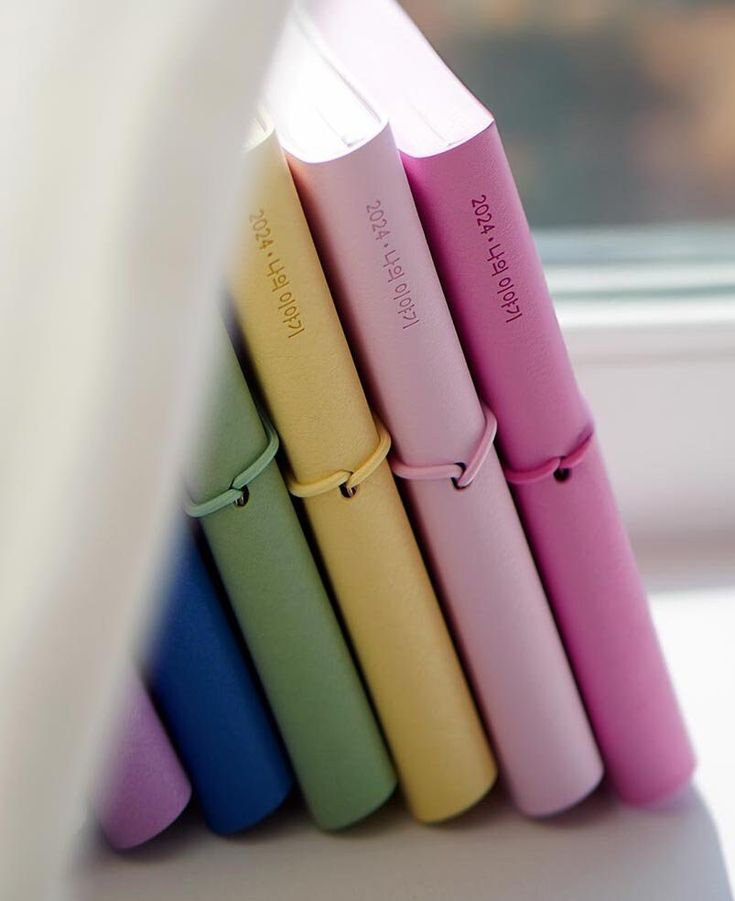
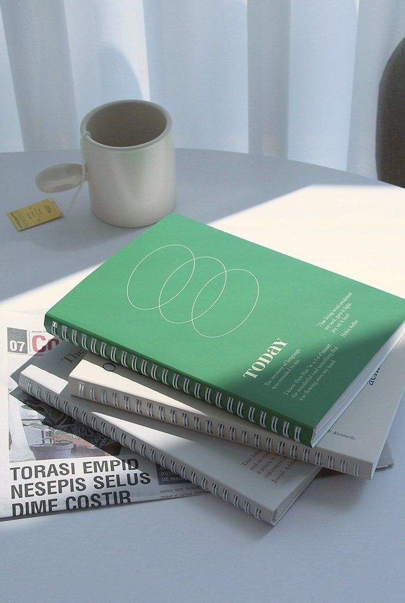
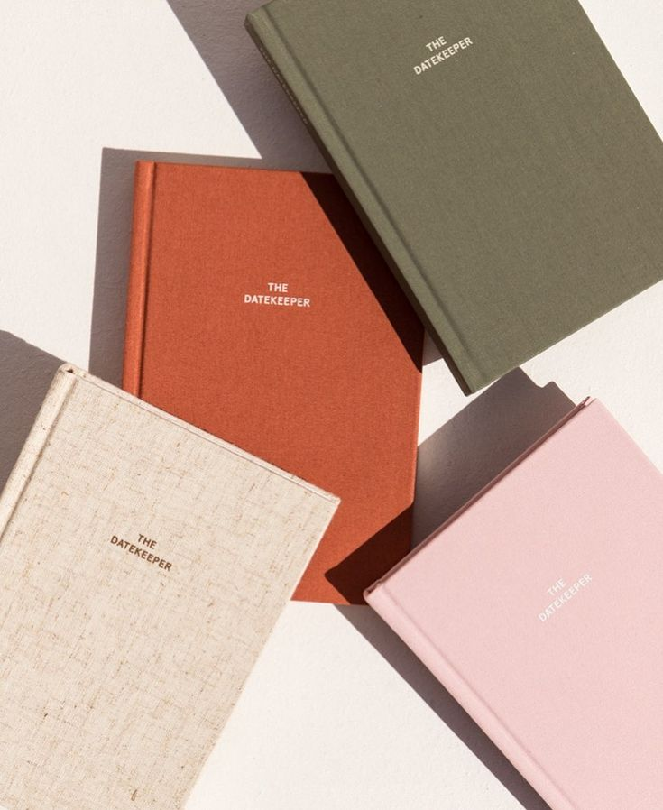
← 메인으로4장 물건 · Objects
손이 먼저 가는 다섯 가지
다섯 물건 모두 오래 써서 이제 내 몸처럼 익숙하다
고르지 않는 것 — 반짝이고 색이 센 물건
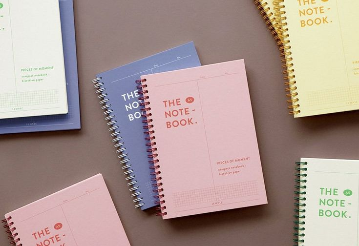
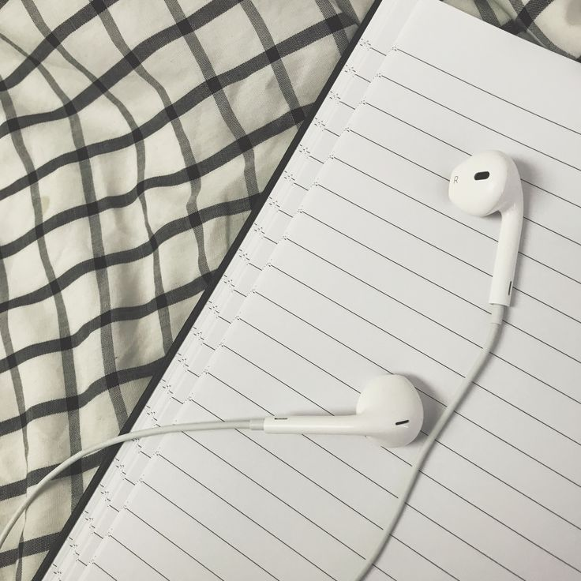
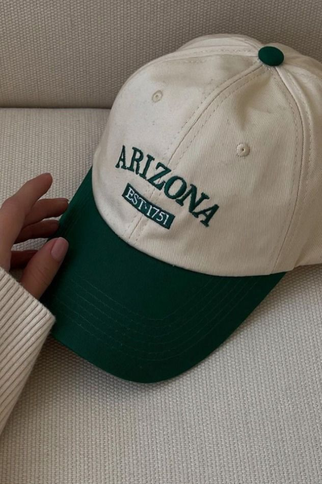
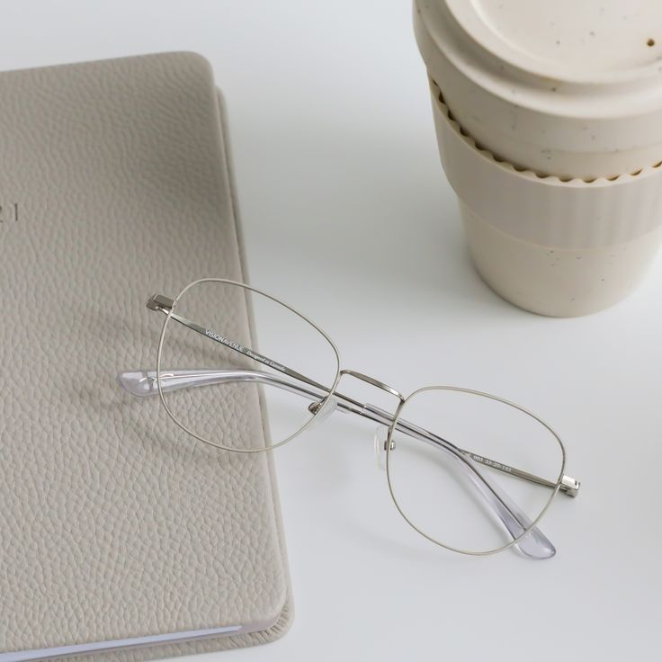
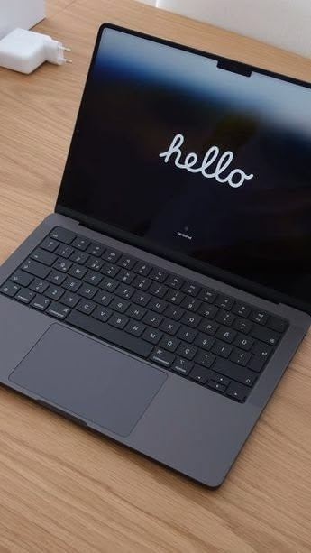
No.01



No.02
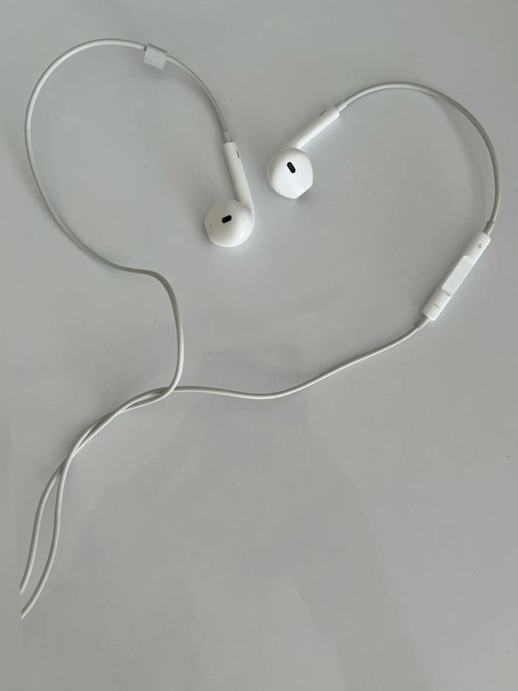
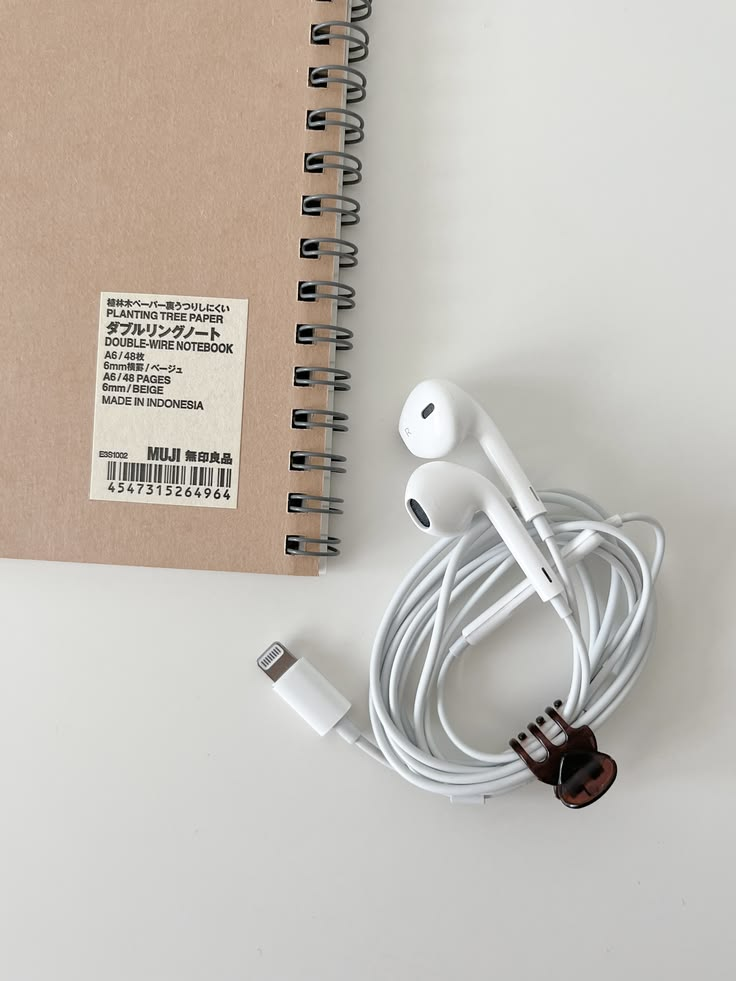
No.03
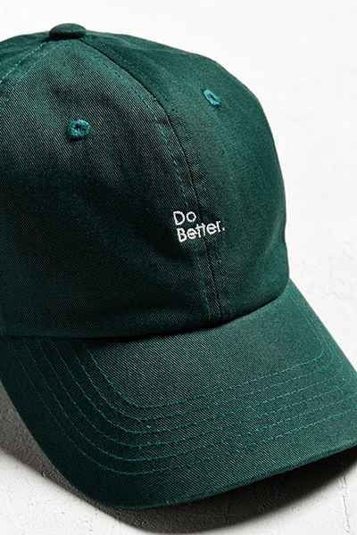
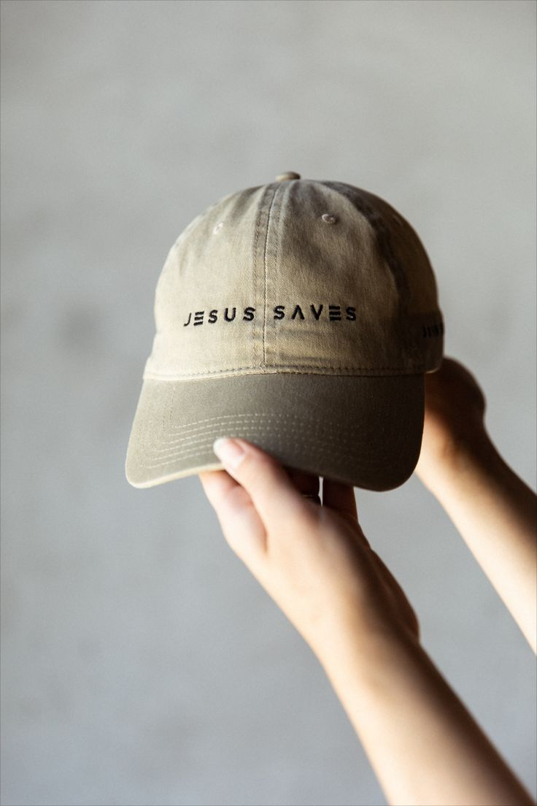
No.04
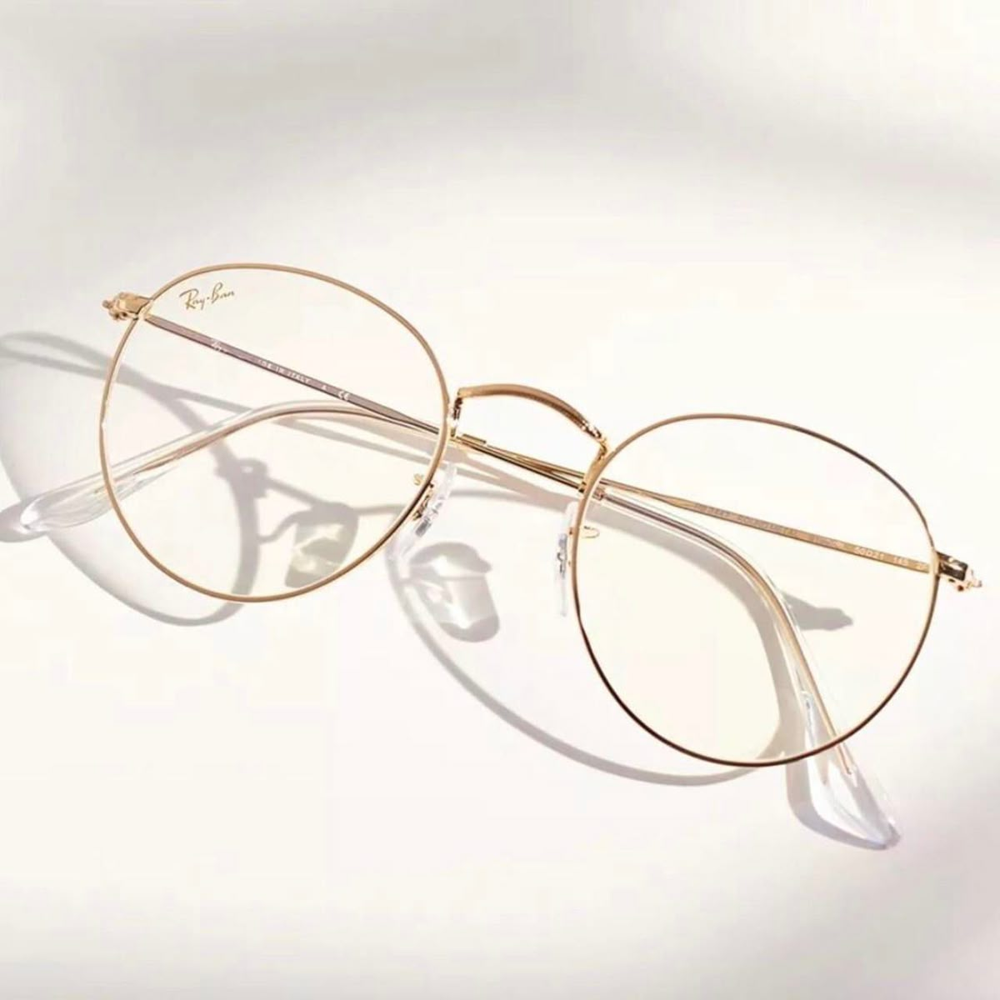
No.05
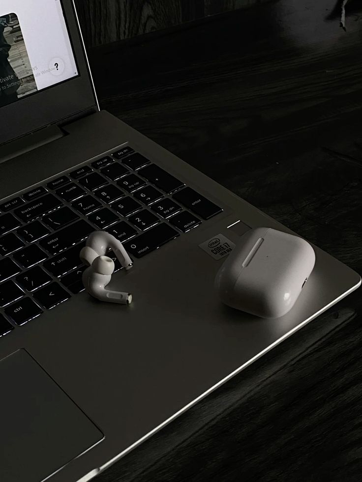